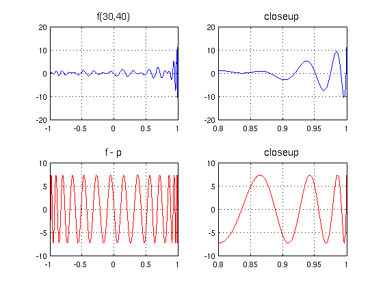
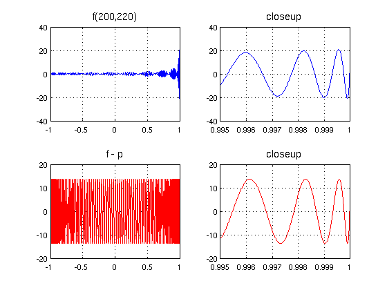

A wiggly function and its best approximations
Ricardo Pachon and Nick Trefethen, November 2010
(Chebfun example approx/WigglyApprox.m)
Ken Lord, whose doctoral supervisor was the Chebyshev technology wizard Charles Clenshaw, has explored functions of the form
f(x) = T_m(x) + T_m+1(x) + ... + T_n(x),
where T_k is the kth Chebyshev polynomial, as challenging functions for minimax approximation by polynomials of lower order. We can construct such functions in a single Chebfun command:
fmn = @(m,n) sum(chebpoly(m:n),2);
For example, here we plot f(30,40) and its best approximation of degree 29:
LW = 'linewidth'; FS = 'fontsize'; fs = 14; tic, m = 30; n = 40; f = fmn(m,n); subplot(2,2,1), plot(f,LW,1) grid on, title('f(30,40)',FS,fs) subplot(2,2,2), plot(f{.8,1},LW,1.6) grid on, title('closeup',FS,fs) p = remez(f,m-1); err = f-p; subplot(2,2,3), plot(err,'r',LW,1) grid on, title('f - p',FS,fs) subplot(2,2,4), plot(err{.8,1},'r',LW,1.6) grid on, title('closeup',FS,fs), toc
Elapsed time is 2.079370 seconds.
Here are f(200,220) and its best approximation of degree 199:
tic, m = 200; n = 220; f = fmn(m,n); subplot(2,2,1), plot(f,LW,.8) grid on, title('f(200,220)',FS,fs) subplot(2,2,2), plot(f{.995,1},LW,1.6) grid on, title('closeup',FS,fs), xlim([.995 1]) p = remez(f,m-1); err = f-p; subplot(2,2,3), plot(err,'r',LW,.8) grid on, title('f - p',FS,fs) subplot(2,2,4), plot(err{.995,1},'r',LW,1.6) grid on, title('closeup',FS,fs), xlim([.995 1]), toc
Elapsed time is 1.461200 seconds.